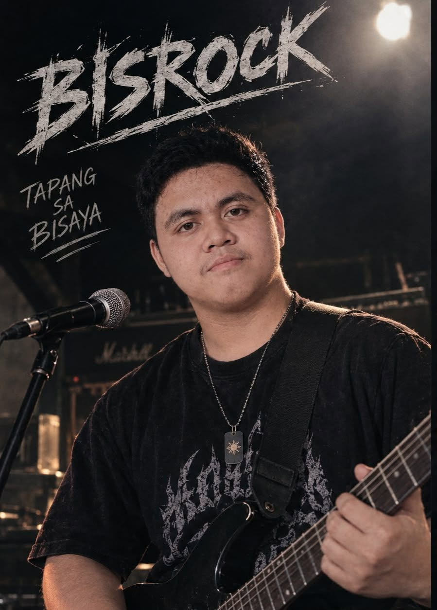

Genre: Bisrock
Bisrock Recommendation
Bisrock is rock music sung in Cebuano and other Bisaya languages, born out of the Visayas' own band scene rather than the Manila-centric mainstream. It carries the same guitar-driven energy as OPM rock, but with lyrics and swagger rooted firmly in Bisaya identity. This list gathers the tracks that best represent that regional pride.
Popular
-
1
 Balay Ni Mayang Max Surban
Balay Ni Mayang Max SurbanA Visayan classic from Max Surban, often called the "Father of Bisrock."
-
2
Bisan Pa Wet Slipperz
A modern entry from one of Cebu's active Bisrock bands, keeping the scene alive today.
-
3
Suroy-Suroy Missing Filemon
A wandering, travel-themed anthem from one of Bisrock's most established acts.
-
4
Ako Si M16 Missing Filemon
A punchy, high-energy cut that shows off the band's rowdier rock side.
-
5
Mao Na Ni Brownman Revival
A reggae-rock blend from a Cebu act known for mixing Bisaya lyrics with island grooves.